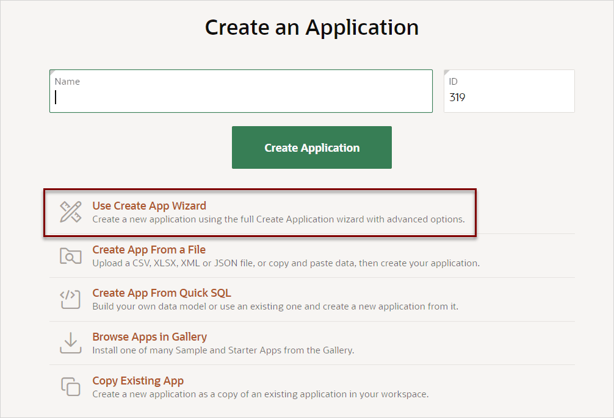

5.3.1 About the Full Create Application Wizard
Learn about how the full Create Application Wizard works.
Creating a new application can a single or multiple step process. Once you click Create on the App Builder home page, the wizard prompts you to select an application type. To launch the full Create Application Wizard, click Use Create App Wizard .

Description of the illustration use_create_app_wizard.png
Note:
To learn more about other options on this page, see Choosing an Application Creation Method.The full Create Application Wizard appears. You specify the application name and appearance and then you add pages. Applications can contain multiple pages and can include various components such as calendars, cards, charts, dashboards, forms, interactive grids, master detail or editable grids, and reports. Once created, you can edit the page names, alter the page order, or delete them.
Features provide application-level functionality and can only be added once per application. Available features include Install Progressive Web App, Push Notifications, About Page, Access Control (to configure role-based user authorization), Activity Reporting, Configuration Options (enable or disable specific functionality), Feedback, and Theme Style Selection.
Then, you configure Settings. Settings are used in the generation of the application and include the Application ID, Schema, Authentication, Language, Advanced Settings (which include application definition settings and preferences as well as security and globalization attributes), and UI Defaults.
After you create an application using the Create Application Wizard, you can modify pages and add additional pages using the Create Page Wizard. You can also take advantage of application blueprints. Each time you run the Create Application Wizard, it saves an application blueprint which you can use to start adding pages to an application, or edit the application definition as a JSON document.